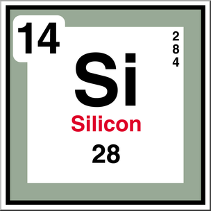

أسترجع وأتساءل
لماذا يكون داخل السلك معدن، وغلافه بلاستيك؟
فكّر في وظيفة كل مادة. سنبدأ من مكونات الذرّة لنفسر اختلاف التوصيل، ثم نفهم كيف نستفيد من هذا الاختلاف في صناعة العناصر الإلكترونية.
نبدأ من مكونات الذرّة وإلكترونات التكافؤ، ثم نقارن المواد في قدرتها على توصيل الكهرباء. نفهم لماذا نختار مادة لمسار التيار وأخرى لعزله، وما الذي يميز أشباه الموصلات.
أسترجع وأتساءل
فكّر في وظيفة كل مادة. سنبدأ من مكونات الذرّة لنفسر اختلاف التوصيل، ثم نفهم كيف نستفيد من هذا الاختلاف في صناعة العناصر الإلكترونية.
ابدأ بما لا تراه العين
اقرأ، ثم جرّب وفسّر
تتكون المادة من ذرات. تضم النواة بروتونات موجبة ونيوترونات متعادلة، وتوجد حول النواة إلكترونات سالبة. أكثر ما يعنينا هنا إلكترونات المستوى الخارجي: إلكترونات التكافؤ.
استكشف النموذج
في النموذج المعروض للسيليكون-28: 14 بروتونًا و14 نيوترونًا و14 إلكترونًا. توزيع الإلكترونات في النموذج المدرسي: 2، 8، 4.

العدد الكتلي 28 = 14 بروتونًا + 14 نيوترونًا.
الرسم نموذج مبسط لتوزيع الإلكترونات؛ الدوائر ليست مسارات كوكبية حرفية.
عندما يكون عدد البروتونات مساويًا تمامًا لعدد الإلكترونات، تتساوى الشحنات الموجبة والسالبة في المقدار، وتصبح الشحنة الكلية للذرة صفرًا؛ فتكون متعادلة كهربائيًا. أما النيوترونات فهي متعادلة الشحنة، ولا تدخل في حساب الشحنة الكلية.
تتيح إلكترونات التكافؤ الأربعة لذرة السيليكون تكوين أربع روابط تساهمية مع أربع ذرات مجاورة، فتتكون شبكة بلورية منتظمة ومستقرة. ويساعدنا فهم هذه الروابط على فهم عملية التطعيم، وكيف نتحكم في توصيل السيليكون للكهرباء لاستخدامه في صناعة الإلكترونيات والدوائر المتكاملة.
شاهد واستمع · 43 ثانية
ابحث عن موضع كل جسيم، ثم فسر كيف تكون الذرة متعادلة.
في الأسلاك المعدنية، تسهم الإلكترونات المتحركة في نقل الشحنة، بينما تبقى النوى مرتبطة ببنية المادة. حركة الجسيمات داخل نموذج الذرة لا تعني وحدها مرور تيار في دائرة.
المادة نفسها تصنع الفرق
اقرأ، ثم جرّب وفسّر
تختلف المواد في عدد حوامل الشحنة المتاحة للحركة وفي سهولة انتقالها. لهذا نختار مادة لمسار التيار وأخرى لعزله.
تكمن أهمية أشباه الموصلات في إمكانية التحكم في قدرتها على توصيل الكهرباء، ومنها التحكم بالتطعيم. وتُستخدم هذه الخاصية في صناعة الترانزستور، الذي يمكن أن يعمل مفتاحًا إلكترونيًا سريعًا (Switch) يتحكم في مرور التيار في الدارة.
شاهد واستمع · 33 ثانية
راقب تكرار ترتيب الذرات. كل رابطة تساهمية تضم إلكترونين مشتركين.
لن ينقل المسار البلاستيكي التيار المطلوب بسهولة، وسيصبح السطح الخارجي موصلًا. اختيار المادة يعتمد على وظيفتها، وليس على شكلها فقط.
أفكر ثم أتحقق
أجب بكلماتك أولًا، ثم اضغط «إظهار الإجابة» وقارن تفسيرك بالإجابة المقترحة.
إجابة نموذجية
ليس بالضرورة. الأول قد يعرض جميع إلكترونات الذرّة المتعادلة، والثاني قد يركز على إلكترونات التكافؤ الأربعة فقط. يجب قراءة وصف كل رسم لمعرفة ما يمثله.
إجابة نموذجية
أغفل مدى قدرة حوامل الشحنة على الحركة داخل المادة. تختلف المواد في عدد الحوامل المتاحة للحركة وفي سهولة انتقالها، لذلك يختلف توصيلها.
إجابة نموذجية
لأننا نحتاج أحيانًا إلى التحكم في التوصيل، وليس إلى أكبر توصيل ممكن. يمكن تغيير خصائص السيليكون بالتطعيم، كما يتأثر توصيله بالضوء والحرارة.
ألخّص ما تعلمته
وجود الإلكترونات وحده لا يجعل المادة موصلًا جيدًا؛ المهم توافر حوامل شحنة تستطيع الانتقال فيها. وتتميز أشباه الموصلات بإمكان التحكم في توصيلها.
صيغ المحتوى للصف التاسع اعتمادًا على المادة المرئية المقدمة من المعلم ومراجع تعليمية. فيديوها الذرّة والسيليكون مصحوبان بتعليق صوتي عربي ونص متزامن، ويمكن تنزيلهما. نماذج الذرات والبلورات مبسطة؛ قيم المحاكاة توضيحية وليست بيانات تصنيع.